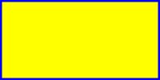
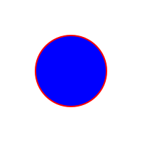
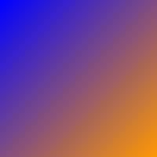

SVG Files in CNIT 131A
This page contains 3 SVG files created for Homework 9
1. This image (rectangle.svg) used "<rect>" element and "stroke" attribute to create a yellow rectangle with a blue border

2. This image (circle.svg) used "<circ>" element and "stroke" attribute to create a blue circle with a red border

3. This image (gradient_shape.svg) used "defs" and linearGradient element to create a square with gradient color
